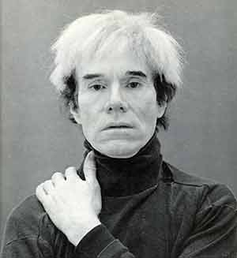
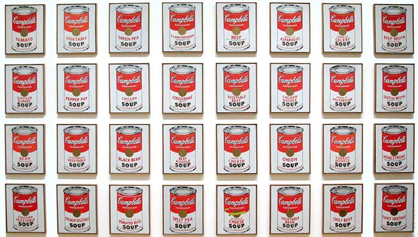
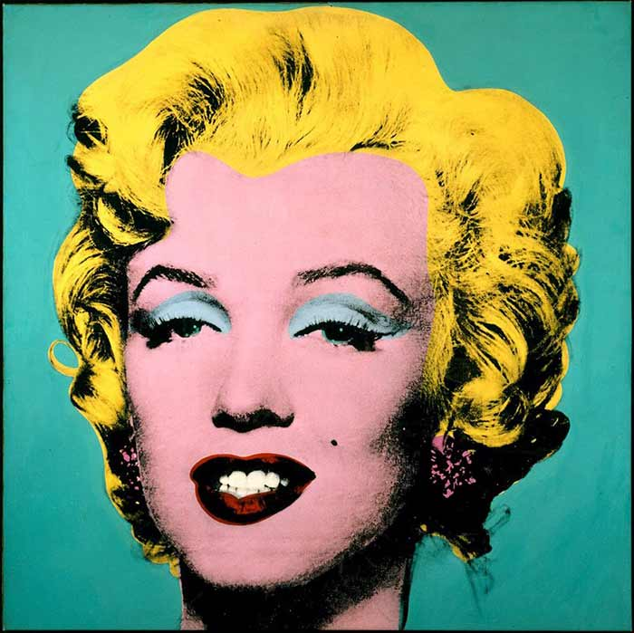

ANDY WARHOL
Pop art

Si le terme Pop Art est aujourd'hui largement diffusé, en revanche le champ artistique qu'il désigne ainsi que la problématique qu'il soulève restent souvent méconnus. Le Pop Art anglais désigne un groupe d’artistes qui se manifeste à partir de la moitié des années 50. Son identité se construit autour du cercle intellectuel l’Independent Group. Constitué des peintres Eduardo Paolozzi et Richard Hamilton, du couple d’architectes Alison et Peter Smithson, du critique d’art Lawrence Alloway, l’IG a essentiellement centré sa recherche théorique sur la technologie, d’où la référence récurrente du Pop Art anglais à la science-fiction.
Sans communication explicite avec le Pop Art anglais, le Pop Art américain désigne une tendance née d’initiatives individuelles. S’il n’est pas un mouvement structuré au sens d’un groupe qui organise des manifestations collectives, il a néanmoins une cohérence. Globalement issu du travail de Robert Rauschenberg et surtout de Jasper Johns, il se caractérise par un intérêt pour les objets ordinaires, l'ironie, ainsi que par la confiance en la puissance des images. Le foyer du Pop Art américain est localisé à New York, où exposent tout d’abord des artistes comme Claes Oldenburg et Jim Dine, Roy Lichtenstein, Andy Warhol, puis James Rosenquist, George Segal, et Tom Wesselman.

Andy Warhol, né Andrew Warhola le 6 août 1928 à Pittsburgh en Pennsylvanie1 et mort à New York le 22 février 1987, est un artiste américain qui appartient au pop art, mouvement artistique dont il est l'un des innovateurs. En 1960, il réalise ses premiers tableaux inspirés des comics, à la même période que Roy Lichtenstein. C'est en 1962 que Warhol participe avec Roy Lichtenstein et des artistes français (comme Klein et Niki de Saint Phalle...) à une exposition majeure du Pop Art et du Nouveau réalisme du nom de The New Realists à New York. Il peint ses premières boîtes de soupes Campbell's et Dollars, et compose aussi ses premières sérigraphies sur les stars américaines. Irving Blum, directeur d'une galerie de Los Angeles, expose les trente-six boîtes de soupes et les achète toutes. Première exposition exclusive à la Eleanor Wards Stable Gallery à New York.
En 1963, il adopte la technique qu'il utilise pour ses œuvres les plus célèbres: la photographie sérigraphiée est reportée sur toile. Les photographies utilisées sont en noir et blanc, il colore le fond de la toile, et ensuite, imprime le sujet, le visage de Marilyn Monroe par exemple, avec seulement quelques détails, pour le rendre plus neutre, pour les reproduire par sérigraphie. Souvent, c'est un motif qui sera reproduit plusieurs fois sur la toile. C'est le stéréotype du Pop art.

Ses figures favorites sont les noms de marque déposés, le symbole du dollar ou les visages de célébrités. Le ton est à la fois populaire et iconoclaste, s'inspirant de la culture populaire. Le thème des Comics, qui avait d'abord intéressé l'artiste, est déjà pris par le peintre Roy Lichtenstein qui en fait son outil visuel. Celui de la typographie est utilisé par Jasper Johns. Pour se distinguer, Warhol comprend qu'il doit trouver une niche qui devienne son sujet principal. Ses amis lui suggèrent de peindre la chose qu'il adore le plus par-dessus tout. C'est ainsi que pour sa première exposition majeure, il peint les fameuses conserves Campbell's Soup. Cette œuvre est encore considérée comme sa marque de fabrique. Les thèmes fondamentaux chez Warhol sont l'image, son pouvoir au sein de la société de consommation et son lien avec la mort. Chez Warhol, la répétition de la figure se rapporte souvent à son exténuation. Le choix des sujets est en rapport avec cette obsession de la mort, y compris pour les toiles célèbres de Marilyn Monroe (peinte après sa mort) ou de Liz Taylor (peinte alors que l'actrice était gravement malade).